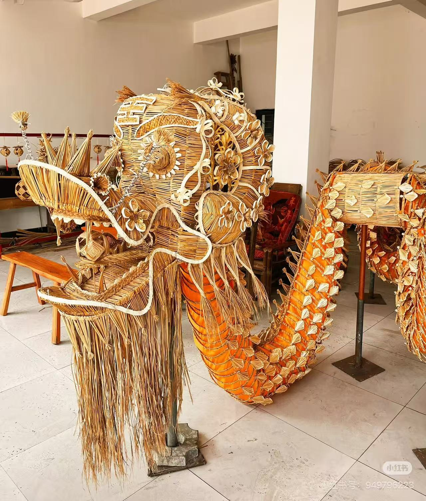
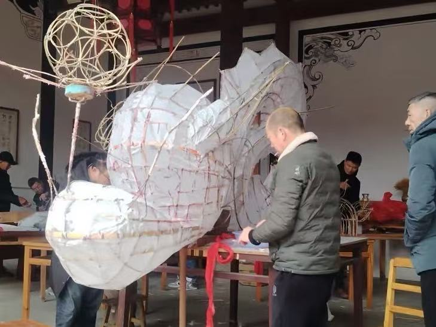
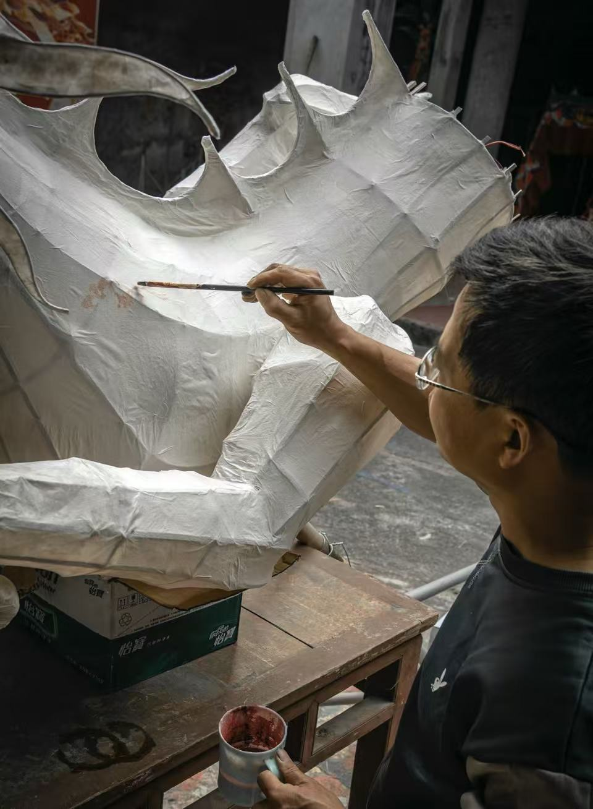

湖口草龙

湖口草龙是江西省九江市湖口县独有的传统民俗舞龙，也是国家级非物质文化遗产，被誉为 “中华一绝”。整条龙完全由天然稻草、竹篾、麻绳手工扎制而成，不施任何颜料，以稻草的原色呈现出质朴而磅礴的生命力。龙身由数百节稻草扎制的龙节串联，最长可达百米，舞动时金鳞翻涌、气势如虹，是农耕文明里诞生的 “活态图腾”。
制作工艺
湖口草龙的制作工艺是一门濒临失传的 “指尖绝活”，全程纯手工、无机械：
选料备料：选用晚季金黄的糯稻草，经过晾晒、熏蒸、捶打等多道工序，让稻草柔韧不易断；同时准备竹篾、麻绳作为骨架和连接件。
骨架扎制：以竹篾为骨，扎制龙头、龙身、龙尾的框架，龙头造型威严，龙须、龙角、龙眼等细节都用稻草精细编织而成。
编扎成型：将处理好的稻草以搓、拧、编、扎等技法，紧密缠绕在竹篾骨架上，每一寸龙身都由稻草层层覆盖，纹理细腻，龙鳞栩栩如生。
组装点睛：将扎好的龙节用麻绳串联成整条龙，最后点睛开光，赋予草龙 “灵性”，整个过程耗时数月，是匠人耐心与匠心的极致体现。


龙灯历史
湖口草龙的传承扎根于鄱阳湖农耕文明，历史脉络清晰：
起源期（隋唐）：湖口地区自古就有 “草龙祭天” 的习俗，隋唐时期，百姓用稻草扎制草龙，祈求风调雨顺、五谷丰登，这是湖口草龙的雏形。
成熟期（明清）：明清时期，草龙扎制工艺日趋成熟，造型愈发精致，舞龙仪式也逐渐完善，成为当地春节、元宵期间最重要的民俗活动。
濒危期（近现代）：随着农耕生活方式的改变，草龙制作技艺一度濒临失传，仅少数老匠人掌握完整技法。
复兴期（当代）：2006 年，湖口草龙入选第一批国家级非物质文化遗产名录，经过抢救性保护与传承，草龙重新走进大众视野，多次在国内外展演中大放异彩。
文化传承
湖口草龙早已超越了 “舞龙” 本身，成为农耕文化与匠心精神的载体：
农耕图腾的精神寄托：草龙以稻草为材，是农耕文明的直接产物，寄托了百姓对土地的敬畏、对丰收的祈愿，是人与自然和谐共生的文化符号。
匠心精神的活态传承：草龙的制作技艺复杂、耗时漫长，传承的不仅是扎制技法，更是精益求精、坚守传统的匠人精神。
民俗文化的纽带桥梁：如今，湖口草龙走进校园、社区，通过非遗课堂、民俗展演等形式，让年轻人了解这门古老技艺，让千年草龙在新时代焕发新生，成为连接传统与现代的文化纽带。